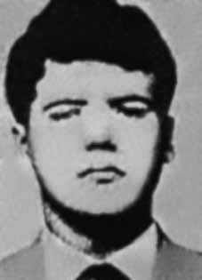

Fernando
Augusto
da Fonseca
CIRCUNSTÂNCIAS DA MORTE
Fernando Augusto Valente da Fonseca morreu no dia 29 de dezembro de 1972, em ação comandada pelo Destacamento de Operações de Informações – Centro de Operações de Defesa Interna (DOI-CODI) do I Exército, Rio de Janeiro, para onde foi transferido depois de ter sido preso e torturado por agentes do Estado no DOI-CODI do IV Exército, em Recife.
Segundo a falsa versão, Fernando e outros cinco militantes do PCBR teriam morrido em confronto armado com agentes das forças de segurança no dia 29 de dezembro de 1972. A nota, divulgada pelo serviço de relações públicas do I Exército somente na edição do Jornal do Brasil de 17 de janeiro de 1973, com o título “Destruído o Grupo de Fogo Terrorista do PCBR/GB”, informava que em ações simultâneas, realizadas em pontos diferentes da Guanabara, os órgãos de segurança, prosseguindo operações contra grupos terroristas remanescentes, desbarataram duas importantes células do Partido Comunista Brasileiro Revolucionário (PCBR), que atuavam coordenadas nos bairros de Grajaú e Bento Ribeiro.
As operações contra o grupo teriam se viabilizado graças a informações obtidas a partir da prisão de lideranças regionais do PCBR e da apreensão de documentos relativos ao planejamento de ações futuras. Particularmente, a prisão de Fernando Augusto da Fonseca, importante quadro do PCBR, em Recife, no dia 26 de dezembro de 1972, teria possibilitado o desmonte do chamado Grupo de Fogo do PCBR. Segundo a mesma versão, em seu interrogatório, Fernando Augusto teria fornecido às equipes de investigação informações sobre dois aparelhos do PCBR, localizados no Rio de Janeiro.
De posse dessas informações, os agentes do DOI-CODI/IV de Recife teriam conduzido Fernando até o Rio de Janeiro, onde ele teria acompanhado um grupo de agentes a um “ponto” no bairro do Grajaú, que estava marcado para o encontro de outros quatro militantes. No Grajaú, ao se aproximar do carro no qual aguardavam os outros quatro integrantes do partido, Fernando teria sido baleado por seus próprios companheiros que, percebendo o cerco policial, decidiram abrir fogo. Na sequência, um intenso tiroteio com as forças de segurança teria resultado na morte de José Bartolomeu Rodrigues, Getúlio de Oliveira Cabral e José Silton Pinheiro, cujos corpos teriam sido carbonizados dentro do veículo, incendiado em decorrência da troca de tiros.
Um quarto militante teria conseguido escapar, mas este nunca chegou a ser identificado. No mesmo momento, outra equipe teria se deslocado para o bairro de Bento Ribeiro, local onde estariam outros militantes do PCBR. No segundo confronto travado no “aparelho”, ainda narrado pela falsa versão, dois militantes teriam reagido ao cerco policial com armas de fogo, inclusive granadas de mão, e acabaram mortos no tiroteio. De acordo com a nota oficial, as duas vítimas seriam Valdir Salles Saboia e Luciana Ribeiro da Silva, nome falso de Lourdes Maria Wanderley Pontes.
As investigações realizadas pela CEMDP e pela Comissão Nacional da Verdade (CNV) revelaram a existência de indícios que permitem desconstruir a versão oficial divulgada pelos órgãos da repressão. Como oficialmente reconhecido, Fernando foi preso no dia 26 de dezembro de 1972, em Recife, e levado ao DOI-CODI/IV. Nessa data, Fernando se preparava para viajar com a sua esposa, Sandra Maria da Fonseca, e seu filho para Belo Horizonte, onde passariam o fim de ano. De acordo com o depoimento de Sandra Maria anexado ao processo da CEMDP, pouco antes da viagem, Fernando deixou o hotel no qual estavam hospedados para se encontrar com outro militante da organização.
Cerca de uma hora mais tarde, Sandra Maria foi presa, encapuzada e levada com o filho do casal por agentes da Delegacia de Ordem Política e Social (DOPS) de Pernambuco para um local que não sabia identificar. Lá, foi informada que seu marido também estava detido, porém não chegou a vê-lo. Depois de passar um dia inteiro sendo interrogada, foi conduzida para outro local que parecia ser uma residência, de onde só foi libertada no dia 16 de janeiro de 1973 e apenas no dia posterior soube, pela imprensa, da morte de seu marido.
Outros elementos corroboram para fragilizar a versão oficial de morte dos seis militantes do PCBR. Em relatório do Centro de Informações da Aeronáutica (Cisa) sobre as atividades do PCBR está listado, entre outras ações, um assalto a banco que teria ocorrido em outubro de 1972, na rua Marquês de Abrantes, no Rio de Janeiro. Segundo o Relatório, as informações sobre essa ação tinham sido levantadas a partir de declarações de Fernando Augusto da Fonseca e Valdir Salles Saboia. Esse registro aponta para um contato de agentes da repressão com Valdir, anterior à morte do militante, o que indica que também foi detido e interrogado no final de 1972, contrariando a versão de tiroteio após o “estouro” de um aparelho.
A prisão de Valdir Saboia é confirmada por outro documento do Cisa, de 19 de março de 1973, que apresenta um extrato das declarações do militante, relacionando às ações do PCBR mapeadas a partir de seu interrogatório. No caso das mortes de Valdir e Lourdes Maria, o caráter fantasioso do episódio narrado também se evidencia pela indicação do endereço da casa onde teriam sido mortos em Bento Ribeiro: trata-se da rua Sargento Valder Xavier de Lima, nome de um militar morto por militantes do PCBR, em 1970, em Salvador (BA).
Além disso, como já observado pela CEMDP, as fotos da perícia técnica desmentem a versão de tiroteio, que teria envolvido inclusive o uso de granadas, no suposto aparelho em Bento Ribeiro. As fotos mostram que não há marcas de tiros na parede, e o corpo de Lourdes Maria aparece em um canto da sala e atrás de uma árvore de natal, que permanece com as bolas de vidrilho intactas. A provável prisão anterior dos militantes e a encenação do tiroteio no Grajaú com a carbonização do veículo para encobrir suas mortes sob tortura ou execuções também são sustentadas pelo ex-preso político Rubens Manoel Lemos, que afirmou, em declaração prestada em 31 de janeiro de 1996, que Fernando Augusto da Fonseca (“Sandália”) e José Silton Pinheiro e Getúlio de Oliveira Cabral foram colocados, já mortos, dentro de um carro da marca Volkswagen, que foi incendiado (explodido) no Rio de Janeiro.
Essa declaração é endossada por outros testemunhos que chegaram ao conhecimento do então deputado federal Nilmário Miranda, enquanto membro da Comissão Externa para Mortos e Desaparecidos Políticos, e denunciaram a morte dos militantes no DOICODI/RJ. Soma-se a isso a análise dos registros fotográficos do local das mortes pela equipe pericial da CNV, que concluiu que o carro foi carbonizado de dentro para fora, uma vez que o motor e o tanque de combustíveis estavam intactos. Segundo a avaliação dos peritos, tanto a distribuição da queima como a intensidade das chamas nos locais tingidos indicam que o fogo foi colocado no interior do veículo, tendo se propagado de dentro para fora. Além disso, é possível observar, pelas fotos, que o fusca não apresentava perfurações de disparos em sua carroçaria.
O registro fotográfico indica o corpo de Fernando do lado de fora do veículo, sendo possível perceber escoriações que revelam as torturas sofridas. A partir da análise da foto, a equipe de perícia da CNV também constatou que o tiro que Fernando tinha recebido era recente, indicando que morreu no local do suposto tiroteio. Outro indício de falsidade da versão oficial diz respeito ao encaminhamento dos corpos para o necrotério do Rio de Janeiro. De acordo com a versão divulgada pelos órgãos de segurança, os dois confrontos teriam ocorrido em horários distintos e em diferentes pontos da cidade: duas vítimas teriam morrido em Bento Ribeiro e as outras quatro no Grajaú, bairros que ficam a aproximadamente 15 quilômetros de distância um do outro. Seria esperado, portanto, que os corpos chegassem ao necrotério em momentos distintos.
Não obstante, os documentos oficiais atestam que, ao contrário, todos os corpos deram entrada no Instituto Médico-Legal (IML) às 2h30 da madrugada do dia 30 de dezembro, em guias sequenciais, o que indica que foram recolhidos juntos. Assim como os demais, o corpo de Fernando Augusto deu entrada no IML como desconhecido, embora os próprios órgãos de segurança tivessem pleno conhecimento da sua identidade, inclusive porque reconheceram oficialmente sua prisão desde o dia 26 de dezembro de 1972.
O responsável pelo reconhecimento do corpo de Fernando Augusto foi o irmão de sua esposa, Fernando Albagli, que relatou em depoimento prestado à Justiça Federal do Rio de Janeiro ter notado vários sinais de maus-tratos, como “rosto bastante deformado, com marcas arroxeadas pelo pescoço”, evidenciando as torturas sofridas por Fernando Augusto antes de morrer. O médico Roberto Blanco dos Santos, conhecido por assinar laudos fraudulentos, foi responsável pelo exame de necropsia dos seis militantes mortos.
Apesar de a versão oficial afirmar que morreram em eventos distintos, chama atenção o fato de que os atestados de óbito de Valdir Salles Saboia e de Fernando Augusto da Fonseca registram exatamente a mesma descrição de causa mortis: ferimentos penetrantes do tórax determinando transfixão do coração e do pulmão esquerdo. O corpo de Fernando Augusto da Fonseca foi enterrado pela família no cemitério São João Batista, no Rio de Janeiro (RJ). Embora não seja possível apontar as reais circunstâncias de morte dos seis integrantes do PCBR, fica demonstrada a falsidade da versão divulgada à época, com claro intuito de encobrir a morte das vítimas por execução e em decorrência de tortura. Alguns outros detalhes, que refletem pesquisas realizadas pela CNV no acervo histórico do Arquivo Nacional sobre o caso, estão descritos no capítulo 11 deste relatório.
Fernando Augusto Valente da Fonseca died on December 29, 1972, in an action commanded by the Information Operations Detachment – Internal Defense Operations Center (DOI-CODI) of the 1st Army, Rio de Janeiro, where he was transferred after being arrested and tortured by State agents at the DOI-CODI of the 4th Army, in Recife.
According to the false version, Fernando and five other PCBR militants had died in an armed confrontation with security force agents on December 29, 1972. The note, published by the public relations service of the 1st Army only in the Jornal do Brasil edition of January 17, 1973, with the title “The PCBR/GB Terrorist Fire Group Destroyed”, informed that in simultaneous actions, carried out in different points of Guanabara, the security bodies, Continuing operations against remaining terrorist groups, they disbanded two important cells of the Brazilian Revolutionary Communist Party (PCBR), which operated in coordination in the neighborhoods of Grajaú and Bento Ribeiro.
The operations against the group would have been made possible thanks to information obtained from the arrest of regional PCBR leaders and the seizure of documents relating to the planning of future actions. In particular, the arrest of Fernando Augusto da Fonseca, an important member of the PCBR, in Recife, on December 26, 1972, would have made it possible to dismantle the so-called PCBR Fire Group. According to the same version, in his interrogation, Fernando Augusto would have provided the investigation teams with information about two PCBR devices, located in Rio de Janeiro.
Armed with this information, DOI-CODI/IV agents from Recife would have taken Fernando to Rio de Janeiro, where he would have accompanied a group of agents to a “point” in the Grajaú neighborhood, which was scheduled for a meeting of four other militants. In Grajaú, upon approaching the car in which the other four party members were waiting, Fernando was reportedly shot by his own companions who, realizing the police were surrounding them, decided to open fire. Subsequently, an intense shootout with security forces resulted in the death of José Bartolomeu Rodrigues, Getúlio de Oliveira Cabral and José Silton Pinheiro, whose bodies were charred inside the vehicle, which was set on fire as a result of the exchange of gunfire.
A fourth militant reportedly managed to escape, but he was never identified. At the same time, another team would have moved to the neighborhood of Bento Ribeiro, where other PCBR militants were believed to be. In the second confrontation that took place in the “device”, still narrated by the false version, two militants allegedly reacted to the police siege with firearms, including hand grenades, and ended up dead in the shootout. According to the official note, the two victims were Valdir Salles Saboia and Luciana Ribeiro da Silva, false name Lourdes Maria Wanderley Pontes.
The investigations carried out by CEMDP and the National Truth Commission (CNV) revealed the existence of evidence that allows the official version released by the repression bodies to be deconstructed. As officially recognized, Fernando was arrested on December 26, 1972, in Recife, and taken to DOI-CODI/IV. On that date, Fernando was preparing to travel with his wife, Sandra Maria da Fonseca, and his son to Belo Horizonte, where they would spend the end of the year. According to Sandra Maria's statement attached to the CEMDP process, shortly before the trip, Fernando left the hotel where they were staying to meet another member of the organization.
About an hour later, Sandra Maria was arrested, hooded and taken with the couple's son by agents from the Pernambuco Political and Social Order Police Station (DOPS) to a location she could not identify. There, she was informed that her husband was also detained, but she never saw him. After spending an entire day being interrogated, she was taken to another location that appeared to be a residence, from where she was only released on January 16, 1973 and only on the following day did she learn, through the press, of her husband's death.
Other elements corroborate to weaken the official version of the death of the six PCBR militants. In a report from the Aeronautical Information Center (Cisa) on the activities of the PCBR, among other actions, a bank robbery that allegedly occurred in October 1972, on Rua Marquês de Abrantes, in Rio de Janeiro, is listed. According to the Report, information about this action had been gathered from statements by Fernando Augusto da Fonseca and Valdir Salles Saboia. This record points to contact between repression agents and Valdir, prior to the militant's death, which indicates that he was also detained and interrogated at the end of 1972, contradicting the version of a shootout following the “explosion” of a device.
Valdir Saboia's arrest is confirmed by another Cisa document, dated March 19, 1973, which presents an extract from the militant's statements, relating to the PCBR's actions mapped out from his interrogation. In the case of the deaths of Valdir and Lourdes Maria, the fantasy nature of the narrated episode is also evident by the indication of the address of the house where they were allegedly killed in Bento Ribeiro: it is Rua Sargento Valder Xavier de Lima, named after a soldier killed by PCBR militants, in 1970, in Salvador (BA).
Furthermore, as already noted by CEMDP, the photos from the technical expertise deny the version of a shooting, which would have even involved the use of grenades, in the alleged device in Bento Ribeiro. The photos show that there are no gunshot marks on the wall, and Lourdes Maria's body appears in a corner of the room and behind a Christmas tree, which remains with the glass balls intact. The probable previous arrest of the militants and the staging of the shootout in Grajaú with the charring of the vehicle to cover up their deaths under torture or executions are also supported by former political prisoner Rubens Manoel Lemos, who stated, in a statement made on January 31, 1996, that Fernando Augusto da Fonseca (“Sandália”) and José Silton Pinheiro and Getúlio de Oliveira Cabral were placed, already dead, inside a brand car Volkswagen, which was set on fire (exploded) in Rio de Janeiro.
This statement is endorsed by other testimonies that came to the attention of the then federal deputy Nilmário Miranda, as a member of the External Commission for Political Dead and Missing, and denounced the death of the militants in DOICODI/RJ. Added to this was the analysis of photographic records from the scene of the deaths by the CNV expert team, which concluded that the car was charred from the inside out, as the engine and fuel tank were intact. According to the experts' assessment, both the distribution of the burning and the intensity of the flames in the dyed areas indicate that the fire was placed inside the vehicle, having spread from the inside to the outside. Furthermore, it is possible to observe, from the photos, that the Beetle did not have gunshot holes in its body.
The photographic record indicates Fernando's body outside the vehicle, and it is possible to see bruises that reveal the torture suffered. From analyzing the photo, the CNV forensics team also found that the shot Fernando had received was recent, indicating that he died at the scene of the alleged shooting. Another sign of falsehood in the official version concerns the sending of the bodies to the Rio de Janeiro morgue. According to the version released by security agencies, the two clashes would have occurred at different times and in different parts of the city: two victims would have died in Bento Ribeiro and the other four in Grajaú, neighborhoods that are approximately 15 kilometers away from each other. It would therefore be expected that the bodies would arrive at the morgue at different times.
However, the official documents attest that, on the contrary, all the bodies were admitted to the Instituto Médico-Legal (IML) at 2:30 am on December 30th, in sequential order, which indicates that they were collected together. Like the others, Fernando Augusto's body was admitted to the IML as unknown, although the security agencies themselves were fully aware of his identity, including because they officially recognized his arrest since December 26, 1972.
The person responsible for recognizing Fernando Augusto's body was his wife's brother, Fernando Albagli, who reported in a statement given to the Federal Court of Rio de Janeiro that he had noticed several signs of mistreatment, such as a “severely deformed face, with purple marks on the neck”, evidencing the torture suffered by Fernando Augusto before he died. Doctor Roberto Blanco dos Santos, known for signing fraudulent reports, was responsible for the autopsy examination of the six dead militants.
Although the official version states that they died in different events, the fact that the death certificates of Valdir Salles Saboia and Fernando Augusto da Fonseca record exactly the same description of the cause of death is noteworthy: penetrating chest injuries resulting in transfixion of the heart and left lung. Fernando Augusto da Fonseca's body was buried by his family in the São João Batista cemetery, in Rio de Janeiro (RJ). Although it is not possible to point out the real circumstances of the deaths of the six PCBR members, the falsehood of the version released at the time is demonstrated, with a clear intention of covering up the deaths of the victims by execution and as a result of torture. Some other details, which reflect research carried out by the CNV in the National Archives' historical collection on the case, are described in chapter 11 of this report.
Fernando Augusto Valente da Fonseca murió el 29 de diciembre de 1972, en una acción comandada por el Destacamento de Operaciones de Información – Centro de Operaciones de Defensa Interna (DOI-CODI) del 1.º Ejército, Río de Janeiro, donde fue trasladado luego de ser detenido y torturado por agentes del Estado en el DOI-CODI del 4.º Ejército, en Recife.
Según la versión falsa, Fernando y otros cinco militantes del PCBR habrían muerto en un enfrentamiento armado con agentes de las fuerzas de seguridad el 29 de diciembre de 1972. La nota, publicada por el servicio de relaciones públicas del 1.º Ejército sólo en la edición del Jornal do Brasil del 17 de enero de 1973, con el título “El Grupo de Fuego Terrorista PCBR/GB Destruido”, informaba que en acciones simultáneas, realizadas en diferentes puntos de Guanabara, los cuerpos de seguridad, continuaban operaciones contra los restantes grupos terroristas, desmantelaron dos importantes células del Partido Comunista Revolucionario Brasileño (PCBR), que operaban coordinadamente en los barrios de Grajaú y Bento Ribeiro.
Las operaciones contra el grupo habrían sido posibles gracias a la información obtenida a partir de la detención de líderes regionales de la PCBR y la incautación de documentos relacionados con la planificación de futuras acciones. En particular, la detención de Fernando Augusto da Fonseca, importante miembro del PCBR, en Recife, el 26 de diciembre de 1972, habría permitido desmantelar el llamado Grupo de Bomberos del PCBR. Según la misma versión, en su interrogatorio, Fernando Augusto habría proporcionado a los equipos de investigación información sobre dos dispositivos PCBR, ubicados en Río de Janeiro.
Armados con esta información, agentes del DOI-CODI/IV de Recife habrían llevado a Fernando a Río de Janeiro, donde habría acompañado a un grupo de agentes hasta un “punto” en el barrio de Grajaú, donde estaba prevista una reunión de otros cuatro militantes. En Grajaú, al acercarse al vehículo en el que esperaban los otros cuatro partidistas, Fernando habría sido baleado por sus propios compañeros quienes, al percatarse de que la policía los rodeaba, decidieron abrir fuego. Posteriormente, un intenso tiroteo con las fuerzas de seguridad resultó en la muerte de José Bartolomeu Rodrigues, Getúlio de Oliveira Cabral y José Silton Pinheiro, cuyos cuerpos quedaron calcinados en el interior del vehículo, que fue incendiado como consecuencia del intercambio de disparos.
Según los informes, un cuarto militante logró escapar, pero nunca fue identificado. Al mismo tiempo, otro equipo se habría desplazado hasta el barrio de Bento Ribeiro, donde se creía que se encontraban otros militantes del PCBR. En el segundo enfrentamiento ocurrido en el “dispositivo”, aún narrado por la versión falsa, dos militantes supuestamente reaccionaron al cerco policial con armas de fuego, incluidas granadas de mano, y terminaron muertos en el tiroteo. Según la nota oficial, las dos víctimas eran Valdir Salles Saboia y Luciana Ribeiro da Silva, nombre falso de Lourdes María Wanderley Pontes.
Las investigaciones realizadas por el CEMDP y la Comisión Nacional de la Verdad (CNV) revelaron la existencia de pruebas que permiten deconstruir la versión oficial difundida por los órganos de represión. Como se reconoció oficialmente, Fernando fue detenido el 26 de diciembre de 1972, en Recife, y trasladado al DOI-CODI/IV. En esa fecha, Fernando se disponía a viajar con su esposa, Sandra María da Fonseca, y su hijo a Belo Horizonte, donde pasarían fin de año. Según declaración de Sandra María adjunta al proceso del CEMDP, poco antes del viaje, Fernando salió del hotel donde se hospedaban para encontrarse con otro miembro de la organización.
Aproximadamente una hora después, Sandra María fue arrestada, encapuchada y llevada con el hijo de la pareja por agentes de la Comisaría de Policía de Orden Político y Social (DOPS) de Pernambuco a un lugar que no pudo identificar. Allí le informaron que su marido también estaba detenido, pero nunca lo vio. Luego de pasar un día entero siendo interrogada, fue llevada a otro lugar que parecía ser una residencia, de donde recién fue liberada el 16 de enero de 1973 y recién al día siguiente se enteró, a través de la prensa, de la muerte de su esposo.
Otros elementos corroboran para debilitar la versión oficial sobre la muerte de los seis militantes del PCBR. En un informe del Centro de Información Aeronáutica (Cisa) sobre las actividades del PCBR, se enumera, entre otras acciones, un robo a un banco ocurrido presuntamente en octubre de 1972, en la Rua Marquês de Abrantes, en Río de Janeiro. Según el Informe, la información sobre esta acción se habría obtenido de declaraciones de Fernando Augusto da Fonseca y Valdir Salles Saboia. Este registro apunta a contactos entre agentes de represión y Valdir, previos a la muerte del militante, lo que indica que éste también fue detenido e interrogado a finales de 1972, contradiciendo la versión de un tiroteo tras la “explosión” de un artefacto.
La detención de Valdir Saboia está confirmada por otro documento de la CISA, fechado el 19 de marzo de 1973, que presenta un extracto de las declaraciones del militante, relativas a las acciones del PCBR trazadas a partir de su interrogatorio. En el caso de la muerte de Valdir y Lourdes María, el carácter fantasioso del episodio narrado también se evidencia por la indicación de la dirección de la casa donde supuestamente fueron asesinados, en Bento Ribeiro: es la Rua Sargento Valder Xavier de Lima, llamada así en honor a un soldado asesinado por militantes del PCBR, en 1970, en Salvador (BA).
Además, como ya señaló el CEMDP, las fotografías de la pericia técnica desmienten la versión de un tiroteo, que habría implicado incluso el uso de granadas, en el presunto artefacto en Bento Ribeiro. En las fotos se ve que no hay marcas de disparos en la pared, y el cuerpo de Lourdes María aparece en un rincón de la habitación y detrás de un árbol de Navidad, el cual permanece con las bolas de cristal intactas. La probable detención previa de los militantes y la realización del tiroteo en Grajaú con carbonización del vehículo para encubrir sus muertes bajo torturas o ejecuciones también son sustentadas por el ex preso político Rubens Manoel Lemos, quien afirmó, en declaración del 31 de enero de 1996, que Fernando Augusto da Fonseca (“Sandália”) y José Silton Pinheiro y Getúlio de Oliveira Cabral fueron colocados, ya muertos, dentro de un automóvil marca Volkswagen, que fue colocado en llamas (explotó) en Río de Janeiro.
Esta afirmación es refrendada por otros testimonios que llegaron a conocimiento del entonces diputado federal Nilmário Miranda, como miembro de la Comisión Externa de Muertos y Desaparecidos Políticos, y denunciaron la muerte de los militantes en DOICODI/RJ. A esto se sumó el análisis de registros fotográficos del lugar de las muertes realizado por el equipo de peritos de la CNV, que concluyó que el auto estaba carbonizado de adentro hacia afuera, ya que el motor y el tanque de combustible estaban intactos. Según la valoración de los peritos, tanto la distribución de la quema como la intensidad de las llamas en las zonas teñidas indican que el fuego se localizó en el interior del vehículo, habiéndose extendido desde el interior hacia el exterior. Además, se puede observar, en las fotografías, que el Escarabajo no tenía agujeros de bala en su carrocería.
El registro fotográfico señala el cuerpo de Fernando afuera del vehículo, y se pueden observar hematomas que delatan las torturas sufridas. Al analizar la fotografía, el equipo forense de la CNV también encontró que el disparo que había recibido Fernando era reciente, lo que indica que falleció en el lugar del presunto tiroteo. Otro signo de falsedad en la versión oficial se refiere al envío de los cadáveres a la morgue de Río de Janeiro. Según la versión difundida por los organismos de seguridad, los dos enfrentamientos habrían ocurrido en distintos momentos y en distintos puntos de la ciudad: dos víctimas habrían muerto en Bento Ribeiro y las otras cuatro en Grajaú, barrios que se encuentran aproximadamente a 15 kilómetros de distancia entre sí. Por lo tanto, se esperaría que los cuerpos llegaran a la morgue en diferentes momentos.
Sin embargo, los documentos oficiales dan fe de que, por el contrario, todos los cadáveres fueron ingresados al Instituto Médico-Legal (IML) a las 2:30 horas del 30 de diciembre, en orden secuencial, lo que indica que fueron recogidos juntos. Al igual que los demás, el cuerpo de Fernando Augusto fue ingresado al IML como desconocido, aunque los propios organismos de seguridad tenían pleno conocimiento de su identidad, incluso porque reconocían oficialmente su detención desde el 26 de diciembre de 1972.
El responsable de reconocer el cuerpo de Fernando Augusto fue el hermano de su esposa, Fernando Albagli, quien informó en una declaración ante el Tribunal Federal de Río de Janeiro que había notado varias señales de malos tratos, como un “rostro severamente deformado, con marcas moradas en el cuello”, evidenciando las torturas sufridas por Fernando Augusto antes de morir. El médico Roberto Blanco dos Santos, conocido por firmar informes fraudulentos, fue el responsable de la autopsia de los seis militantes muertos.
Aunque la versión oficial afirma que fallecieron en hechos diferentes, llama la atención que los certificados de defunción de Valdir Salles Saboia y Fernando Augusto da Fonseca registran exactamente la misma descripción de la causa de la muerte: heridas penetrantes en el tórax que provocaron transfixión del corazón y del pulmón izquierdo. El cuerpo de Fernando Augusto da Fonseca fue enterrado por su familia en el cementerio de São João Batista, en Río de Janeiro (RJ). Si bien no es posible señalar las circunstancias reales de la muerte de los seis miembros de la PCBR, sí se demuestra la falsedad de la versión difundida en su momento, con una clara intención de encubrir las muertes de las víctimas mediante ejecuciones y como consecuencia de torturas. Algunos otros detalles, que reflejan investigaciones realizadas por la CNV en el acervo histórico del Archivo Nacional sobre el caso, se describen en el capítulo 11 de este informe.